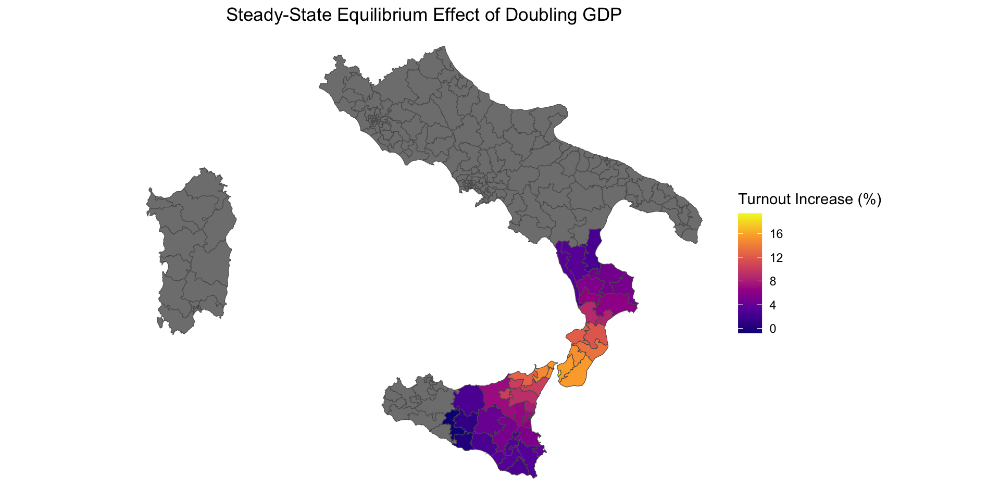

Week 12: Tools for Final Projects
PPOL 6805 / DSAN 6750: GIS for Spatial Data Science
Fall 2025
Wednesday, November 12, 2025
Real MF Project Hours!!!
- The “MF” is for “Map Fanatic”!
Final Project Details
- Project Showcase: 6:30-9pm, Wed, December 3, 2025
- Come eat falafel and show off your cool visualizations and regression coefficients!
- Reports: Due 5:59pm, Fri, December 12, 2025
- If you’re in DSAN 6000 and you’re worried about that final project… See next slide!
Due Date Details
Presentation Setup
- Each of your desks becomes a “table” at a GIS conference!
- Everyone can go around and ask others about projects 😻
- But, FOOD \(\implies\) you can also stay!
Report Setup
- GitHub repository (for your portfolio!)
- GH Pages site:
your_username.github.io/gis_project
- GH Pages site:
- …What do you put in that GitHub repository?
- Quarto Manuscript
- What do you put in the Quarto manuscript?
- Writeup + Visualizations + Code, interspersed!
- “Literate Programming” \(\Rightarrow\) Reproducible Results!
Spatial Regression
- (We made it! This is the last Spatial Data Science topic!)
- (Nearly all extremely-fancy applied GIS models can be implemented via Spatial Regression!)
Motivation: When Does Non-Spatial Regression “Work”?
\[ Y_i = \beta_0 + \beta_1X_{i,1} + \beta_2X_{i,2} + \cdots + \beta_MX_{i,M} + \varepsilon_i \]
Importance of OLS regression: can give us the Best Linear Unbiased Estimator (BLUE)
This is only true if the Gauss-Markov assumptions hold—one of these is that the error terms are uncorrelated:
\[ \text{Cov}[\varepsilon_i, \varepsilon_j] = 0 \; \forall i \neq j \]
Spatial Autocorrelation in Residuals
- We have now seen several models / datasets where effect of some variable \(X\) (say, population) on another variable \(Y\) (say, disease count) is spatial! (Kind of the whole point of the class 😜)
- So, to see when OLS will “work”, vs. when you need to incorporate GIS, key step is plotting the spatial distribution of regression residuals!
Example: Italian Elections


Will OLS “Work” Here?
- Can we use OLS to derive the BLUE of the effect of GDP on voting?
| \(N = 477\) | \(\widehat{\beta}\) | SE | \(t\) |
|---|---|---|---|
| Intercept | 35.30 | 2.21 | 15.96 |
| Log GDP per cap | 13.46 | 0.65 | 20.84 |
Moran’s \(I\) for residuals = 0.47(!)
| \(N = 477\) | \(\widehat{\beta}\) | SE | \(t\) |
|---|---|---|---|
| Intercept | 4.70 | 1.66 | 2.80 |
| Log GDP per cap | 1.77 | 0.48 | 3.66 |
| \(\rho\) | 0.87 | 0.02 | 36.7 |
What Does it Mean that “Spatial Effect” is Significant?
(From the future… your HW4!)
Case 1: No Residual Spatial Autocorrelation
- Example: Residuals have Moran’s \(I\) near 0…
- …Don’t need GIS at all!
Case 2: Conditional Autoregressive Model (CAR)
- GIS, but… only for “fixing” your regression
\[ Y_i = \underbrace{\mu_i}_{\text{Non-spatial model}} + \underbrace{\frac{1}{w_{i,\cdot}}\sum_{j \neq i}(Y_j - \mu_j)}_{\text{Spatial Autocorrelation}} + \varepsilon_i \]
Case 3: Simultaneous Autoregressive Model (SAR)
- The main event! Here we are explicitly modeling “spatially lagged” versions of our dependent variable \(Y\)!
\[ Y = \mathbf{X}\beta + \rho \underbrace{\mathbf{W}Y}_{\mathclap{\text{Spatially-lagged }Y}} + \boldsymbol\varepsilon \]
Immediately-Relevant Tools for Final Projects! (The Coming Weeks)
- Research Methodology (Hypotheses)
- Visualizing Spatial Data
- Weighted Connection Matrices \(\mathbf{W}\)
- Remote-Sensed / Raster Data
- Data Anonymization / Synthetic Datasets
Research Methodology: Hypotheses
Social Science (McCourt):
Machine Learning (DSAN):
(Secretly My Opportunity to do More Spatial Regression!)
- What explains previously-observed instances of separatist insurgencies?
- Can we predict separatist insurgencies?
- One (spatial) idea: how far away are [centers of power] from [regions of countervailing power]?
- \(X\) = Distance from capital, \(Y\) = Insurgency
- Unit of observation: Regions? Insurgent uprisings? Countries?
Operationalizing
- The variables in previous slide are conceptual
- Operationalizing = “Turning into measurable quantities”
- \(X\) = MeanDistance(Capital, Insurgent Region), \(Y = \mathbf{1}[\text{Insurgency}]\)
- Alternative:
\[ Y = \begin{cases} 2 &\text{if Successful Insurgency} \\ 1 &\text{if Failed Insurgency} \\ 0 &\text{if No Insurgency} \end{cases} \]
Connection Matrices
spdep- Neighbors if Centroids are close
- Neighbors if Capitals are close
- 🤔
Visualizing Spatial Data
- My recommendation for final presentations: Tiptoe from
mapview\(\leadsto\) Leaflet!
Code
# library(osmdata) |> suppressPackageStartupMessages()
# library(leaflet)
# assign("has_internet_via_proxy", TRUE, environment(curl::has_internet))
# placebb <- osmdata::getbb("Barcelona")
# hospitals <- placebb |>
# opq() |>
# add_osm_feature(key = "amenity", value = "hospital") |>
# osmdata_sf()
# motorways <- placebb |>
# opq() |>
# add_osm_feature(
# key = "highway",
# value = "motorway"
# ) |>
# osmdata_sf()
# leaflet() |>
# addTiles() |>
# addPolylines(
# data = motorways$osm_lines,
# color = "black"
# ) |>
# addPolygons(
# data = hospitals$osm_polygons,
# label = hospitals$osm_polygons$name
# )Custom Icons!
| Chicago | Detroit | |
|---|---|---|
| Population | 2,746,388 | 631,524 |
Code
library(tidyverse) |> suppressPackageStartupMessages()
library(sf) |> suppressPackageStartupMessages()
library(leaflet) |> suppressPackageStartupMessages()
library(leaflet.extras2) |> suppressPackageStartupMessages()
library(mapview) |> suppressPackageStartupMessages()
city_df <- tibble::tribble(
~city, ~lon, ~lat, ~pop,
"Chicago", 41.950567516553896, -87.93011127491978, 2746388,
"Detroit", 42.45123004999075, -83.18402319217698, 631524
)
city_sf <- sf::st_as_sf(
city_df,
coords = c("lat", "lon"),
crs=4326
)
city_buf_sf <- city_sf |> sf::st_buffer(20000)
city_cases_sf <- city_buf_sf |> sf::st_sample(size=rep(10,2)) |> sf::st_as_sf()
city_cases_sf$city <- "Detroit (10 Cases)"
city_cases_sf[1:10, 'city'] <- "Chicago (10 Cases)"
city_cases_sf$sample <- "Flu"
city_pop_sf <- city_buf_sf |>
sf::st_sample(size=c(16, 4)) |> sf::st_as_sf()
city_pop_sf$city <- "Detroit"
city_pop_sf[1:16, 'city'] <- "Chicago"
city_pop_sf$sample <- "People"
city_combined_sf <- bind_rows(city_cases_sf, city_pop_sf)
# mapview(city_combined_sf, zcol="city", marker="sample")
Flu = makeIcon(
"https://upload.wikimedia.org/wikipedia/commons/thumb/c/c3/Maki2-danger-24.svg/240px-Maki2-danger-24.svg.png",
"https://upload.wikimedia.org/wikipedia/commons/thumb/c/c3/Maki2-danger-24.svg/24px-Maki2-danger-24.svg.png",
20,
20
)
People = makeIcon(
"https://upload.wikimedia.org/wikipedia/commons/thumb/e/ef/Maki2-pitch-24.svg/24px-Maki2-pitch-24.svg.png",
"https://upload.wikimedia.org/wikipedia/commons/thumb/e/ef/Maki2-pitch-24.svg/24px-Maki2-pitch-24.svg.png",
20,
20
)
city_combined_sf$r <- ifelse(city_combined_sf$sample == "Flu", 0, 4)
city_flu_sf <- city_combined_sf |> filter(sample == "Flu")
city_ppl_sf <- city_combined_sf |> filter(sample == "People")
leaflet(city_flu_sf) |>
addProviderTiles("CartoDB.Positron") |>
addMarkers(data=city_flu_sf, icon = Flu) |>
addMarkers(data=city_ppl_sf, icon = People)Remote-Sensed / Raster Data
- You’ve seen (to some extent)
terra stars: Same group behindsf- Google solar panel data
.tiffiles: Dynamically loaded
Anonymization / Synthetic Datasets
- Differential privacy
- Used by the US Census(!) Since 2020
Example: Bolshevik Revolution \(\rightarrow\) “Bipolar” World

- Null hypothesis: no spatial effect of democratization/de-democratization on neighboring countries
- If null hypothesis is true, and countries democratize/de-democratize independently… could this pattern still arise?
References
PPOL 6805 Week 12: Tools for Final Projects